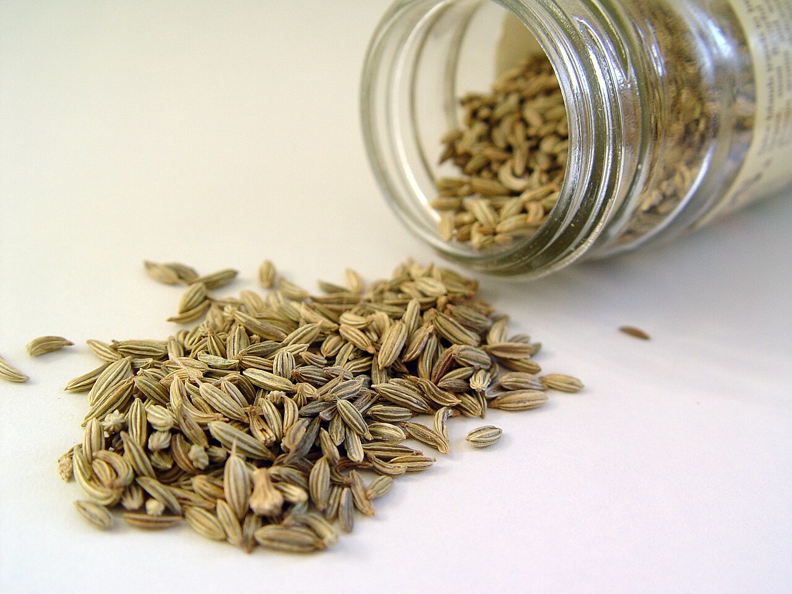
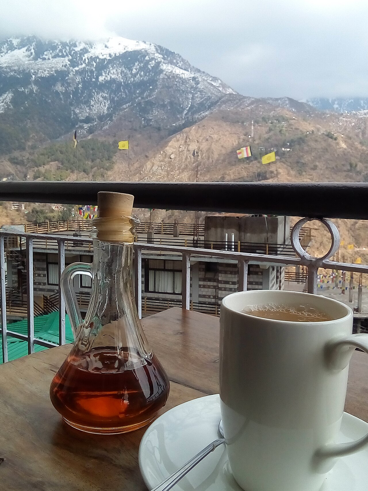
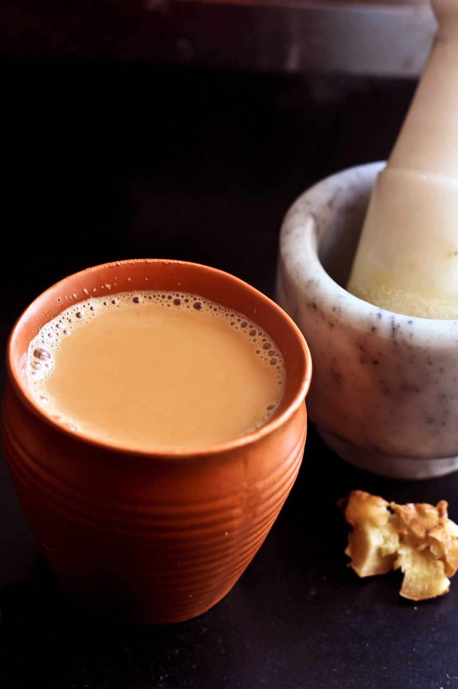
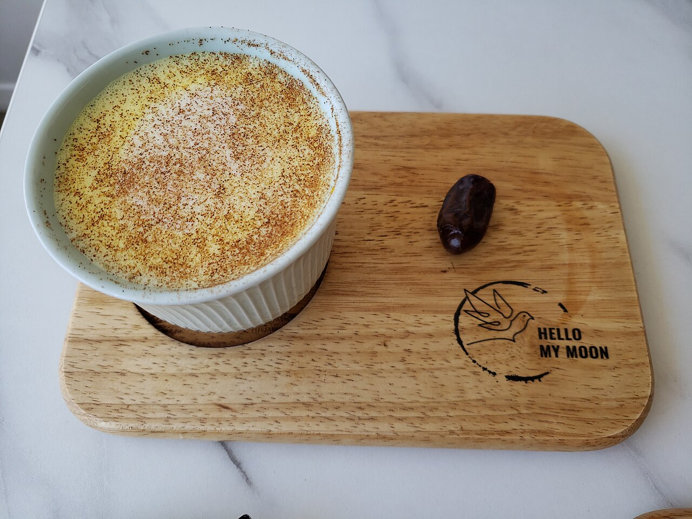
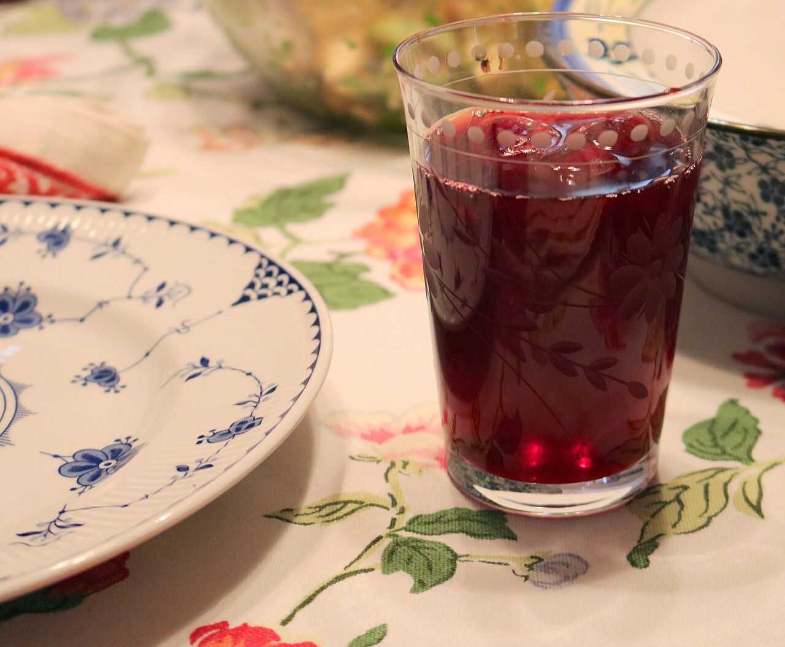
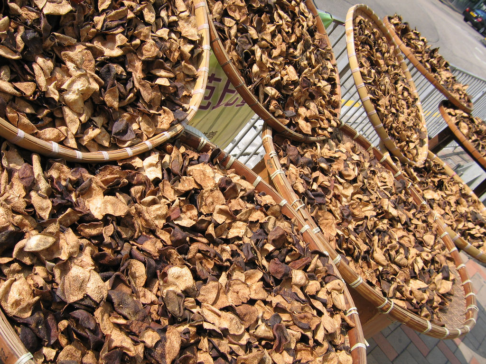

在我的療程裡，最後一步總是一杯茶。
按摩完、薰蒸完，媽媽蓋著毯子躺著，我會端一杯溫溫的 CCF 茶給她。很多人喝第一口就會這樣說。
對。阿育吠陀的茶，很多根本沒有茶葉。它們是香料、葉子、根，在廚房裡煮出來的一杯溫熱。
這篇想跟妳分享幾杯常見的阿育吠陀茶飲，最後還有一杯，是我的老師教的。
為什麼是「溫的」？
阿育吠陀很重視 Agni（阿耆尼，消化之火）。它就像身體裡的一個小爐子，食物要靠它才能被消化、吸收、變成養分。
冰冷的飲料，在阿育吠陀的眼光裡，像是往爐子裡潑冷水。所以這篇裡的每一杯，幾乎都是溫的、熱的，或至少是常溫，不加冰。
這是阿育吠陀的傳統觀點，不是現代研究的結論，我先說在前面。但我自己的經驗是：一杯溫的東西喝下去，身體會先鬆一口氣。
① CCF 茶：三種種子，一壺日常
CCF 是三種香料種子的英文縮寫：
- C — Cumin（孜然籽，印度叫 Jeera）：溫，最核心的助消化香料。在阿育吠陀裡，它用來點燃消化火、幫助排氣。
- C — Coriander（芫荽籽，Dhanya）：涼，退火、利尿、解油膩。重口味吃完的隔天，很適合它。
- F — Fennel（茴香籽，Saunf）：涼，助消化但不上火，也能清口氣。
一溫、兩涼，加在一起剛好溫和平衡。所以傳統上說它三種體質都適合，是我最常給的「入門第一杯」。

它傳統上用在：
- 飯後脹氣、消化慢、覺得肚子沉沉的
- 吃太油、太重口味之後
- 水腫、身體覺得濕濕重重的時候
- 想要一杯溫和、可以天天喝的水
怎麼煮： 三種種子各 1 小匙，加 1000ml 水，煮滾後小火 5 分鐘，濾掉種子，裝進保溫瓶，當作一天的水慢慢喝。
誠實說： 我沒有找到「CCF 三合一」這個配方本身的臨床研究。三種香料裡，茴香在脹氣方面的支持相對多一些，孜然、芫荽多半還是傳統經驗。[1] 網路上常說它能「排毒」「瘦身」，我查不到證據，所以我不這樣說。
我喜歡 CCF，是因為它好溫和、好日常，而且煮的時候整個廚房都是香的。
② 生薑茶：暖胃的那一片
生薑（Ardraka） 熱性，暖胃、開胃、止吐。
阿育吠陀還會分生薑和乾薑：止吐、開胃用生薑；除濕、化痰用乾薑粉（Shunthi）。

怎麼煮： 幾片生薑煮 10 分鐘，可以加一點蜂蜜（等溫度降下來再加，阿育吠陀認為蜂蜜不要加熱）或幾滴檸檬。
我也很喜歡一個小儀式：飯前 10 分鐘，一片薄薑、一小撮岩鹽、幾滴檸檬，含著慢慢嚼。這是阿育吠陀的開胃小動作。
研究怎麼說： 生薑是這幾杯裡研究最多的。Cochrane 回顧孕期噁心的各種方法，說生薑「可能有幫助，但證據有限、不一致」；[2] 之後的綜合回顧多半認為，生薑對「噁心」的改善比對「嘔吐」明顯，但納入的研究品質不高。[3]
所以孕吐的媽媽可以試試看，但如果吐到吃不下、喝不下，請一定要看醫生。
③ Masala Chai 香料奶茶：街頭的那一杯
Masala Chai（瑪薩拉茶，印度香料奶茶）：masala 是「綜合香料」，chai 就是「茶」，這個字是從中文的「茶」一路傳過去的。[4]
它大概是全世界最有名的印度飲料。不過有件事，我是查了才知道：它其實很年輕。
茶樹在印度阿薩姆是野生的，但很長一段時間，印度人把它當成藥草，不是每天喝的飲料。1830 年代，英國東印度公司開始在印度種茶；到了 20 世紀初，印度茶葉協會為了推銷紅茶，鼓勵工廠、礦場讓工人「喝茶休息」，鐵路沿線的 chaiwala（茶販）才把它煮成今天的樣子：多一點香料、多一點牛奶和糖。聽說協會一開始還不太高興，因為這樣茶葉用得少。[4]
所以 Masala Chai 不是古老的阿育吠陀處方。它比較像是印度的廚房，把自己熟悉的香料，放進了一杯外來的紅茶裡。

常見的香料： 小荳蔻、生薑、肉桂，也常加丁香、黑胡椒、八角。[4] 在阿育吠陀的傳統看法裡，這些都是溫熱、幫助消化火的香料。
怎麼煮： 先把香料放進水裡小火煮幾分鐘，加紅茶葉，再加牛奶煮滾，最後濾掉茶渣和香料。[4] 份量每個家庭都不一樣，沒有標準答案。
提醒： 這是這篇裡唯一含咖啡因的一杯。世界衛生組織建議，每天咖啡因超過 300 毫克的孕婦要減量。[8] 一杯奶茶離這個量還很遠，但如果妳一天也喝咖啡、綠茶，就把它一起算進去。晚上容易睡不好的人，留在白天喝。
④ Golden Milk 黃金奶：睡前的溫柔
黃金奶，是薑黃加溫奶煮的。阿育吠陀傳統上把它當作睡前的修復飲品。

怎麼煮： 溫奶 200ml、薑黃 1/2 小匙、黑胡椒一小撮、Ghee（酥油）1/2 小匙，可以再加一點小荳蔻或肉桂，小火煮 3 分鐘。
為什麼要加黑胡椒和 Ghee？這一點傳統和研究剛好說到一起：薑黃的主要成分薑黃素很難被身體吸收，黑胡椒裡的胡椒鹼能讓吸收率大幅提高，[5] 而薑黃素是脂溶性的，跟油脂一起吃也比較好吸收。
印度的奶奶們沒讀過藥物動力學，卻早就這樣煮了。我每次想到都覺得好奇妙。
提醒： 有在吃抗凝血藥、有膽結石的人，大量吃薑黃之前，先問醫師。一杯黃金奶的量不大，但我還是想說清楚。
⑤ 台灣的好朋友：甘草與洛神
阿育吠陀的智慧不一定要用印度的材料。我很喜歡在台灣找「對應的朋友」：

- 甘草（Yashtimadhu）：在阿育吠陀裡也是重要的藥草，潤喉、養胃。但它含甘草酸，長期大量喝可能讓血壓升高、鉀離子降低，孕期也建議避免大量使用。[6] 偶爾一杯可以，不要天天當水喝。
- 洛神花：涼性，阿育吠陀的說法是清 Pitta（火能量），是台灣夏天天然的退火飲。煮好放涼就好，不要加冰，糖少一點。孕期的媽媽，我建議先不要大量喝。（推測：這是我依傳統說法與常見孕期提醒的保守建議，沒有找到很明確的研究。）
⑥ 老師教的一杯：三子去濕茶
最後這一杯不是印度來的，用的是我們熟悉的中藥材。它是我的阿育吠陀老師在課堂上教的：車前子、決明子、陳皮。
老師說，它可以幫忙排水腫，三種體質基本上都可以喝。

- 車前子：中醫傳統上用來利水，就是幫身體把多的水排出去。
- 決明子：傳統上用來清肝明目、潤腸通便。[9]
- 陳皮：曬乾放陳的橘子皮，是中醫最常用的理氣藥材，傳統上用在噁心、咳嗽有痰的時候。[9]
我很喜歡老師這樣做。阿育吠陀看的是「這個東西的性質是什麼、身體現在需要什麼」，所以在台灣，用台灣買得到的材料就好。
誠實說： 這三樣藥材的現代研究，大多還是成分分析和動物、細胞實驗；[9] 「三子茶」這個組合本身，我沒有找到人體研究。上面寫的是老師的教導和中醫的傳統用法。
提醒： 決明子性質偏寒，本來就容易拉肚子的人喝多了會更嚴重；台灣的中醫師也提醒，孕婦和生理期量多的時候不建議喝。[9] 所以它適合偶爾喝一壺，不適合天天當水喝。
依體質選一杯
阿育吠陀把人的體質分成三種 Doṣa（督夏）：Vāta（瓦塔，風）、Pitta（皮塔，火）、Kapha（卡法，土與水）。
| 妳最近的狀態 | 可以試試 | 少喝一點 |
|---|---|---|
| Vāta 風：手腳冰、睡不好、腦袋停不下來、便秘 | 黃金奶、生薑茶、加一點肉桂的溫奶 | 冰飲、太多咖啡 |
| Pitta 火：容易上火、煩躁、胃酸、長痘 | CCF 茶、芫荽籽水、茴香、洛神（放涼不加冰） | 太辣、太多薑 |
| Kapha 土與水：水腫、沉重、痰多、早上起不來 | 乾薑水、CCF 茶、三子去濕茶 | 甜奶、加很多糖的飲料 |
| 不確定的時候 | CCF 茶，最溫和的入門 |
← 手機上可以左右滑動表格 →
這張表是阿育吠陀的傳統分法，不是診斷。妳的身體每一天都在變，今天適合的，下個月不一定。
產後和哺乳的媽媽，我想多說幾句
- 生薑、CCF 都是溫和的日常飲，產後很適合。但如果妳的寶寶喝奶後特別不舒服，先停下來觀察。
- 茴香要特別說一下。 茴香在很多傳統裡用來催乳，我自己的課程筆記也寫著它「孕婦、小孩皆可」。可是這兩年歐洲的食品安全單位開始提醒：茴香裡的天然成分 estragole（草蒿腦），目前沒辦法訂出安全量；瑞士藥品管理局建議孕期、哺乳期不要用茴香茶，4 歲以下孩子要先問醫療人員。[7] 也有個案報告，哺乳媽媽大量喝含茴香、八角的「發奶茶」後，寶寶出現無力、吸吮變差，停喝後就好轉。[7] 所以我現在會這樣建議：CCF 裡一小匙茴香、偶爾喝，應該問題不大（推測）；但不要把茴香茶當成每天大量的「發奶茶」。
- 甘草、洛神：孕期和哺乳期，先少量或避開。
- Masala Chai 有咖啡因，孕期和哺乳期一天一小杯就好，跟咖啡、茶一起算。
- 三子去濕茶：決明子偏寒、會讓腸子動得比較快，車前子利尿。懷孕中、剛生完還在哺乳的媽媽，先問過中醫師再喝。
- 有在吃藥、有慢性病的媽媽，任何藥草茶喝成每天的習慣之前，先跟醫師或藥師聊一聊。
一杯茶的時間
寫到這裡，我想起療程結束時，媽媽們捧著那杯 CCF 茶的樣子。
她們通常不急著喝，先用兩隻手把杯子包起來，感覺它的溫度。然後小小口地喝，眼睛半閉著。
我覺得阿育吠陀的茶最珍貴的，不只是香料的功效，而是它要妳停下來。要煮、要等、要慢慢喝。在一整天都在照顧別人的生活裡，這是一段只屬於妳的時間。
邀請妳今天也為自己煮一杯。煮的時候，聞一聞香料的味道，問問身體：
今天的妳，需要溫一點，還是涼一點？🌿
如果妳想知道自己是什麼體質、適合喝什麼，歡迎私訊我，我們一起聊聊妳的身體。💛
資料來源
- CCF 茶與三種香料的傳統用法：Kripalu〈CCF: Ayurveda's Miracle Tea〉（實戰）；三合一配方本身未找到臨床研究，茴香的支持相對較多（綜合整理，非單一研究）
- Cochrane〈Interventions for nausea and vomiting in early pregnancy〉（41 篇試驗、5,449 位女性；生薑「可能有幫助，但證據有限且不一致」）：Cochrane（學術・系統綜述）
- 生薑用於孕期噁心的綜合回顧（對噁心效果較明顯、研究品質偏低）：PubMed 22951628；Ginger Bioactive Compounds in Pregnancy: umbrella review（學術）
- Masala Chai 的字源、歷史、常見香料與煮法：Wikipedia〈Masala chai〉（綜合）
- Shoba G 等（1998）胡椒鹼提高薑黃素生物利用率的人體研究，〈Influence of piperine on the pharmacokinetics of curcumin in animals and human volunteers〉*Planta Medica* 64(4):353–356，PubMed 9619120（學術）
- 甘草酸與孕期草藥使用的回顧（建議孕期謹慎使用甘草）：PMC7129125（學術）
- 茴香與 estragole：EFSA 草案意見（無法訂出安全攝取量、哺乳嬰兒為敏感族群）報導：Food Safety Magazine（官方意見轉述）；Swissmedic 建議整理：Walder Wyss（官方轉述）；哺乳嬰兒個案報告見 NCBI LactMed 茴香條目（官方・學術）
- 世界衛生組織〈Restricting caffeine intake during pregnancy〉（每天咖啡因超過 300 毫克的孕婦建議減量）：WHO（官方）
- 三子去濕茶：配方與「排水腫、三種體質都可以喝」出自我的阿育吠陀課堂筆記（實戰）。決明子的傳統用途與研究現況：Chen Y 等（2023）〈Cassiae Semen: A comprehensive review〉*Journal of Ethnopharmacology*，PubMed 36702448；陳皮：Zhang X 等（2024）系統性回顧，PubMed 38942157（學術）。決明子偏寒、易腹瀉、孕婦與生理期不建議：TVBS 健康 中醫師受訪報導（媒體）。車前子的利水為中醫傳統說法，未找到合適的人體研究。
圖片來源
- 〈Herbs and spice on board (Unsplash)〉，Chinh Le Duc，CC0，via Wikimedia Commons
- 〈Fennel seed〉，Holly Cheng，CC BY-SA 3.0，via Wikimedia Commons
- 〈Lemon and ginger tea with honey, Illiterati cafe, Dharamshala, Himachal Pradesh〉，Bhuvana Meenakshi，CC BY-SA 4.0，via Wikimedia Commons
- 〈Kullad chai〉，Thecuriouseye，CC BY-SA 4.0，via Wikimedia Commons
- 〈Golden turmeric latte - Hello My Moon 2024-04-07〉，Andy Li，CC0，via Wikimedia Commons
- 〈A glass of hibiscus tea 03〉，claralieu，CC BY 2.0，via Wikimedia Commons
- 〈Chenpidrying〉，sfllaw（Flickr），CC BY-SA 2.0，via Wikimedia Commons
本文為資訊整理，不構成醫療建議，也不能取代妳與醫師、助產師、兒科醫師的直接討論。